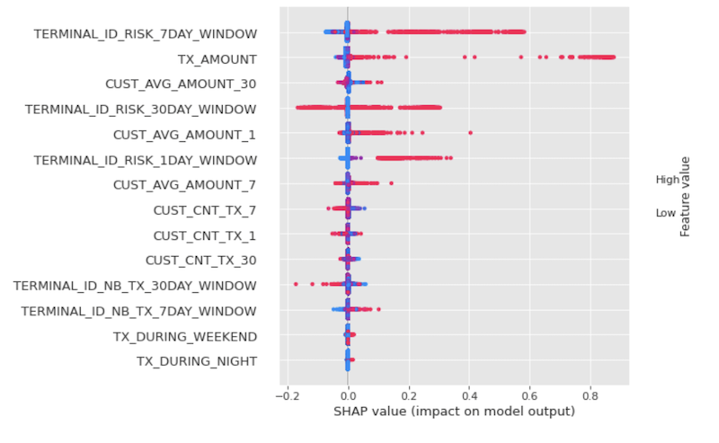

Detecting Credit Card Fraud with Snowflake, Snowpark, and SageMaker Studio
Part 4 of 5: Grid Search Model Construction with Sagemaker Studio Lab
Author: Josh Patterson
Date: zzzzzzz xxth, 2022
Other entries in this series:
- Part 1: Loading the Credit Card Transaction Data Into Snowflake
- Part 2: Scalable Feature Engineering with Snowpark
- Part 3: Connecting AWS Sagemaker Studio Lab to Snowflake
- Part 4: Grid Search Model Selection with AWS Sagemaker Studio Lab and Shap Hypertune
- Part 5: Deploying the Model as a Streamlit Application
Grid Search with scikit-learn for Credit Card Fraud Detection AWS Sagemaker Studio Lab
In the last post in this series we introduced AWS Sagemaker Studio Lab and then connected it to Snowflake inside a notebook. We also did some further feature creation with the data from Snowflake inside the Jupyter notebook.
In this this post in the series we'll cover the following topics:
- Establishing a model performance metric
- Building baseline models
- Hyperparameter search with Shap-Hypertune
- Shap value analysis to understand our features
- Persisting the model and pipeline as PMML
Let's jump into selecting our model performance metric
Exploratory Data Analysis?
Normally we'd spend a good amount of time on exploratory data analysis to better understand what features to create. The original paper this series is based on covers that in depth, so we'll leave that as an exercise for the reader and focus on our contributions to modeling the credit card data.
Selecting a Model Performance Metric
The original book notebook evaluates 3 performance metrics:
Average Precision
Average precision summarizes a precision-recall curve as the weighted mean of precisions achieved at each threshold (reference: Cross Validated discussion).
The average precision metric indicates which models are doing better at predicting the rare class in an imbalanced dataset.
Card Precision @100
The original book describes the Card Precision Top-K metric as:
"The Card Precision top- is the most pragmatic and interpretable measure. It takes into account the fact that investigators can only check a maximum of potentially fraudulent cards per day. It is computed by ranking, for every day in the test set, the most fraudulent transactions, and selecting the cards whose transactions have the highest fraud probabilities. The precision (proportion of actual compromised cards out of predicted compromised cards) is then computed for each day. The Card Precision top- is the average of these daily precisions."
Now that we've established our evaluation metrics, let's establish some model performance baselines.
Random Baseline
You can find a copy of the notebook to generate all of these numbers over in our github account.
We can baseline our predictive models with a simple model where the prediction is a "coin flip". We can see the results of the performance of this type of random model below.
| AUC ROC | Average precision | Card Precision@100 | |
|---|---|---|---|
| Random (coin flip) | 0.5 | 0.007 | 0.017 |
While the area under the curve (AUC) for the ROC curve might be 0.5, the average precision and the Card Precision @ 100 are terribly low. Let's look at a little better baseline next.
Model Baseline
Our next baseline is a basic DecisionTreeClassifier (depth = 2):
| AUC ROC | Average precision | Card Precision@100 | |
|---|---|---|---|
| DecisionTreeClassifier (depth=2) | 0.763 | 0.496 | 0.241 |
Here we can see better numbers across the board and these will serve as a minimal bar to clear for all other models we can come up with.
With our model baseline in hand, let's look at the performance of a few well-known model architectures on our test data.
First Group of Models
Next we test a group of promising model architectures
| AUC ROC | Average precision | Card Precision@100 | |
|---|---|---|---|
| Logistic regression | 0.833 | 0.555 | 0.271 |
| Decision tree with depth of two | 0.763 | 0.496 | 0.241 |
| Decision tree - unlimited depth | 0.757 | 0.113 | 0.204 |
| Random forest | 0.835 | 0.578 | 0.274 |
| XGBoost | 0.830 | 0.558 | 0.259 |
| HistGradientBoostingClassifier | 0.833 | 0.518 | 0.249 |
We can see that logistic regression performs well on this data even though its a relatively simple model compared to the others in the group. It has the 3rd best average precision and then 2nd best card precision @ 100 score
We can also see the random forrest has the best card precision @100 score of the group, so let's fine tune it a bit to see if we can improve its score with grid search.
GridSearch with Random Forrest
Let's work with RF to do some grid search fine tuning
| AUC ROC | Average precision | Card Precision@100 | |
|---|---|---|---|
| Random Forrest with Grid Search | 0.838 | 0.595 | 0.279 |
so we've improved our scores a bit
Let's see if we can use a similar method and improve xgboost as well with shap-hypertune
Finetuning xgboost with Shap-Hypertune
We'll take one of the other promising models (xgboost), and perform further hyperparameter tuning with shap-hypetune
SHAPley Additive exPlanations (SHAP) is a game theoretic approach that explains the output of any model using Shapley values. SHAP associates optimal credit allocation with local explanations by using SHAPley values.
It can be used for making a machine learning model more explainable by visualizing its output. SHAP can be used on any blackbox model but is more efficient on models such as tree esembles.
SHAP supports libraries like SciKit-Learn, PySpark, TensorFlow, Keras, and PyTorch making it a flexible tool for most modeling pipelines.
SHAP is effective at explaining the prediction of any model by computing the contribution of each feature to the prediction. We see SHAP used for model monitoring, fairness and cohort analysis. SHAP is also effective at data visualization as well.
For more context about SHAP check out this article:
Or the original SHAP paper:
Grid Search wit shap-hypertune
Previously in this article we did standard grid search with Random Forrests. Here we'll try grid search where we focus on gradient boosting methods and to hyperparamter tuning with shap-hypetune.
Many times we see feature selection adn hyperparameter tuning as separate steps in a machine learning pipeline. shap-hypertune allows us to do both steps at the same time where we search for the optimal selection of features and the optimal parameter configuration. We can also separate the two stages with shap-hypertune as well.
In the table below we can see the results of shap-hypertune on optimizing xgboost for our training dataset.
| AUC ROC | Average precision | Card Precision@100 | |
|---|---|---|---|
| xgboost with shap-hypertune | 0.809 | 0.577 | 0.279 |
In the next section we summarize all results together.
Summary Table of all Modeling Results
We can see the results of all models attempted below.
| AUC ROC | Average precision | Card Precision@100 | |
|---|---|---|---|
| Logistic regression | 0.833 | 0.555 | 0.271 |
| Decision tree with depth of two | 0.763 | 0.496 | 0.241 |
| Decision tree - unlimited depth | 0.757 | 0.113 | 0.204 |
| Random forest | 0.835 | 0.578 | 0.274 |
| XGBoost | 0.830 | 0.558 | 0.259 |
| HistGradientBoostingClassifier | 0.833 | 0.518 | 0.249 |
| Random Forrest with Grid Search | 0.838 | 0.595 | 0.279 |
| xgboost with shap-hypertune | 0.809 | 0.577 | 0.279 |
Our efforts with grid search and random forrests yeilded some nice improvements. We also were able to improve xgboost some, but not enough to be better in average precision than random forrests.
shap-hypertune still seems to be compelling to keep in the toolbox, especially because of the feature analysis tools SHAP can offer us as we'll see in the next section.
Analyzing Feature Importance with SHAP Values
The short explanation of SHAP Feature Importance is that "featues with large absolute Shapley values are important". In the plot below we'll take a look at a SHAP summary plot that gives us not only a ranking of features but also other information about how each feature affect predictions.
Visualizing SHAP Summary Plot for the Random Forest Model
A summary plot of all the computed Shapley values gives a sense of the overall behavior of the estimator:
In the charge above we see the features sorted in decreasing order of importance where the importance is defined as the "mean of the absolute value of all the computed SHAP values".
This type of plot gives us more information than the standard "feature importance plot" for tree ensembles as it shows us how the variables affect the prediction.
In the plot above the color of the point represents the feature value and for categorical variables (fraud: 1) red is the positive class and blue is the negative class (fraud: 0). The position on the y-axis is determined by the feature and on the x-axis by the Shapley value. The points are all the examples together and the points are vertically jittered when they end up too close to one another.
Quick analysis of the random forest model's top 3 most important features are:
TERMINAL_ID_RISK_7DAY_WINDOWTX_AMOUNTCUST_AVG_AMOUNT_30
Save to PMML for Deployment in Applications
We can now take either of our best models (xgboost or random forrest) and save them to disk for usage in our end-user application. To do this we'll save the model and the data pre-processor code together as a PMML payload as seen in the example code below:
from sklearn2pmml import PMMLPipeline
from sklearn2pmml import sklearn2pmml
xgb_pmml_pipeline = PMMLPipeline(
[
('preprocessor', x_train_mapper),
('classifier', fitted_models_and_predictions_dictionary["XGBoost"]['classifier'])
]
)
sklearn2pmml(xgb_pmml_pipeline, "xgb_cc_fraud_20220405_v2.pmml")
Now that we have our model saved, we can start thinking about building our streamlit application.
Conclusion and Next Steps
In this post we built some baseline models based on our performance metrics and then did some grid search to fine tune the better performing models we found.
We then did some SHAP value analysis to better understand how our model made decisions about the input data.
In our next and final post in this series we will take the model we built and deploy it as a user-facing cloud application with streamlit.
Looking for Snowflake Help?
Our team can help -- we help companies with Snowflake platform operations, analytics, and machine learning.